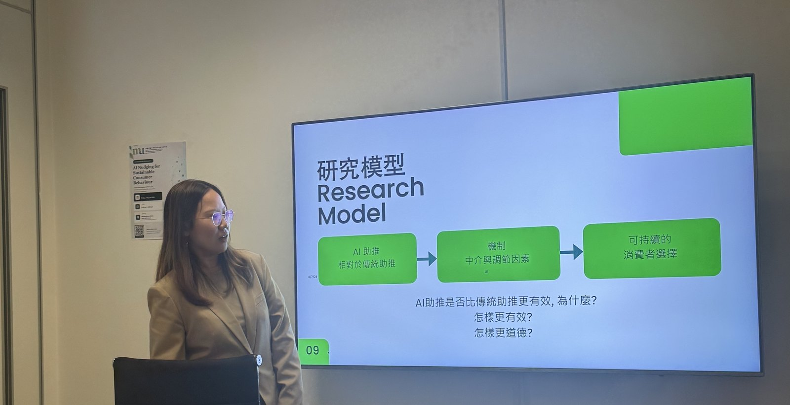
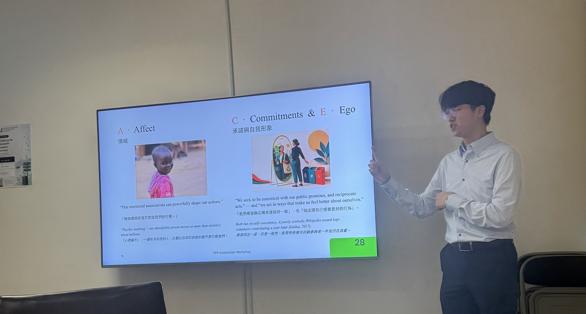

Updates項目進展
Project Updates 項目進展
Milestones, presentations, and research progress from the project.
記錄項目里程碑、學術交流與研究進度。
Mid-term stakeholder workshop中期持份者工作坊
On Friday, 7 August, the mid-term stakeholder workshop on AI nudging for sustainable consumer behaviour in Hong Kong’s tourism and hospitality sectors brought together representatives from consumer protection, tourism, industry, law, and marketing. The project team introduced the study and basic nudge types, followed by discussions on data privacy, consumer trust, greenwashing, algorithmic governance, and the use of AI-generated content to encourage sustainable choices. Participants also shared practical applications in cultural tourism, education, and marketing. The workshop provided valuable cross-sector insights that will guide the project’s next stage and support the responsible design of AI nudges.
人工智能助推與香港旅遊及酒店業可持續消費行為中期持份者工作坊於8月7日（星期五）舉行，匯聚來自消費者保障、旅遊、業界、法律及市場營銷等領域的代表。項目團隊介紹了研究內容及基本助推類型，與會者其後就數據私隱、消費者信任、漂綠、演算法管治，以及運用人工智能生成內容推動可持續選擇等議題展開討論，並分享人工智能在文化旅遊、教育及市場推廣方面的實際應用。工作坊帶來寶貴的跨界別見解，將為項目下一階段及負責任的人工智能助推設計提供指引。


Project presented at SICSS-Penn 2026於 SICSS-Penn 2026 介紹本項目
The project was presented at SICSS-Penn 2026 in Philadelphia, where it received constructive feedback from participating researchers. The discussion helped refine the project’s framing around AI nudging, sustainable consumption, and ethical decision-making in tourism and hospitality contexts.
本項目於 2026 年 6 月在美國費城舉行的 SICSS-Penn 2026 進行介紹，並獲得與會研究人員的建設性意見。相關交流有助於進一步完善本研究對人工智能助推、可持續消費，以及旅遊與酒店業情境中倫理決策的研究定位。
Research studies in progress研究一及研究二進行中
Study 1 and Study 2 are currently in progress to explore the effectiveness and ethical boundaries of AI nudging in sustainable tourism consumption.
研究一及研究二現正進行中，旨在探討人工智能助推在可持續旅遊消費中的成效及倫理邊界。